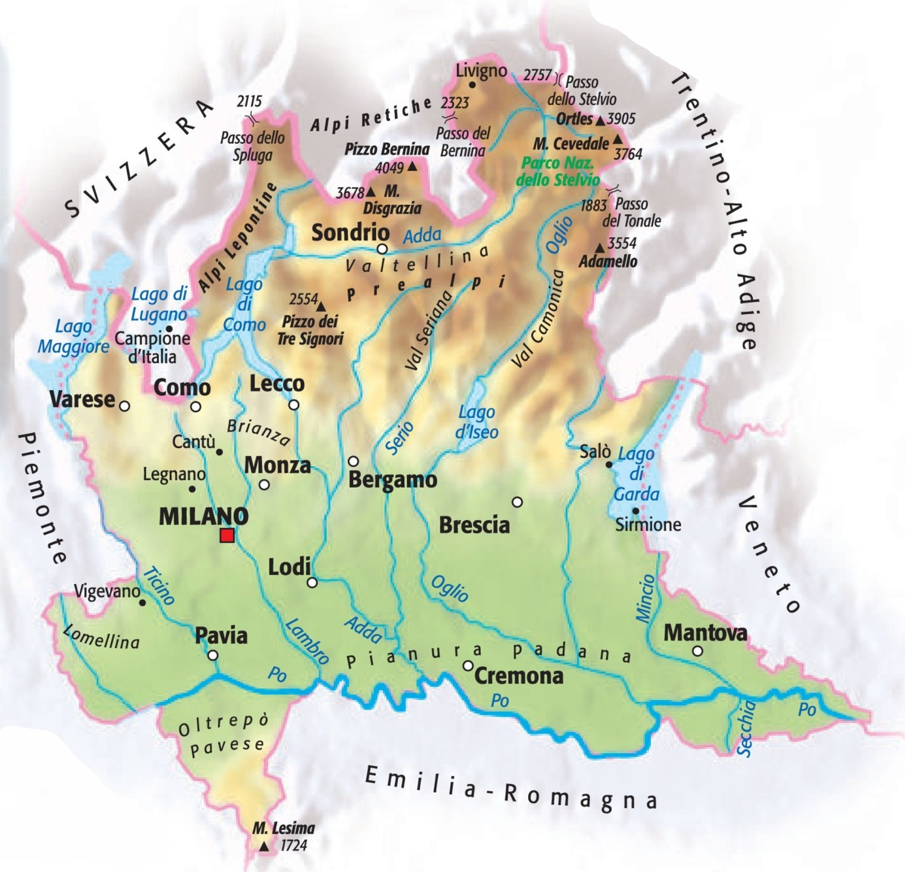
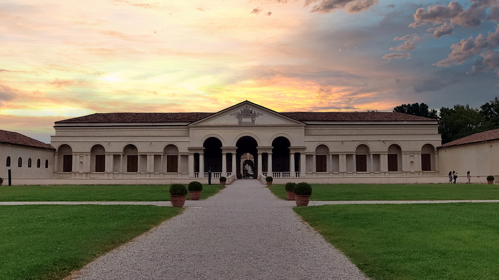

| Nome |
Lombardia |
| Capoluogo |
Città Metropolitana di Milano (MI) |
| Data di Istituzione |
1 Gennaio 1948 |
| Altitudine media |
279 m.s.l.m |
| Superficie |
23.864 km^2 |
| Abitanti (agosto 2023) |
9.967.231 |
| Densità |
418 ab/km^2 |
| Comuni |
1504 |
| Province |
Bergamo (BG), Brescia (BS), Como (CO), Cremona (CR), Lecco (LC), Lodi (LO), Mantova (MN), Monza-Brianza (MB), Pavia (PV), Sondrio (SO), Varese (VA) |
| Confini |
Emilia-Romagna, Piemonte, Trentino Alto-Adige, Veneto, Svizzera |
| Patrono |
S.Ambrogio |
| PIL procapite (2017) |
38.000€ |
Posto da visitare assolutamente: Palazzo Te - Mantova (MN)
Palazzo Te è un notevole esempio di architettura rinascimentale italiano
e fu costruito nel XVI secolo per conto di Federico II Gonzaga,
marchese di Mantova.
L'architetto Giulio Romano, allievo di Raffaello,
fu incaricato della progettazione del palazzo.
Il nome "Te" sembra derivare dalla parola "delizie" o "svaghi,"
indicando la funzione di residenza di villeggiatura del palazzo.
Ecco alcuni dettagli salienti di Palazzo Te:
Architettura:
Palazzo Te è noto per la sua architettura innovativa e fantasiosa.
La struttura comprende cortili, giardini, sale affrescate e una
serie di ambienti che esprimono il gusto dell'epoca per l'ornamentazione
e la decorazione.
Sala dei Giganti:
Uno degli ambienti più celebri di Palazzo Te è la Sala dei Giganti.
Questa sala è decorata con affreschi che narrano la caduta dei giganti,
una scena epica dell'antica mitologia greca.
Gli affreschi coprono le pareti e il soffitto, creando un'esperienza immersiva.
Cortile d'Onore:
Il Cortile d'Onore è uno spazio aperto circondato da colonne e arcate.
Al centro si trova una fontana, e l'intero cortile è progettato in
modo da creare una sensazione di grandiosità e simmetria.
Giardini:
Palazzo Te è circondato da giardini ben curati,
che offrono un rifugio verde e tranquillo.
I giardini sono stati progettati per armonizzare con l'architettura
del palazzo e offrono un luogo piacevole per passeggiare.
Uso attuale:
Oggi, Palazzo Te è aperto al pubblico e ospita mostre,
eventi culturali e visite turistiche.
La struttura è una destinazione popolare per gli amanti dell'arte e della storia,
attirando visitatori da tutto il mondo.
Palazzo Te è dunque un esempio straordinario di architettura rinascimentale,
testimoniando il lusso e la raffinatezza della corte dei Gonzaga nel XVI secolo.
La sua bellezza artistica e architettonica ne fanno una tappa significativa
per chi visita Mantova.
